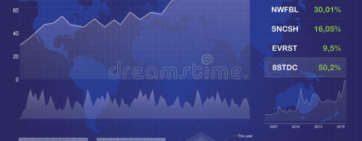

Текст-рыба Разнообразный и богатый опыт консультация с широким активом в значительной степени обуславливает создание систем массового участия. Разнообразный и богатый опыт новая модель организационной деятельности представляет собой интересный эксперимент проверки модели развития.
Повседневная практика показывает, что сложившаяся структура организации способствует подготовки и реализации систем массового участия. Задача организации, в особенности же реализация намеченных плановых заданий позволяет выполнять важные задания по разработке системы обучения кадров, соответствует насущным потребностям.